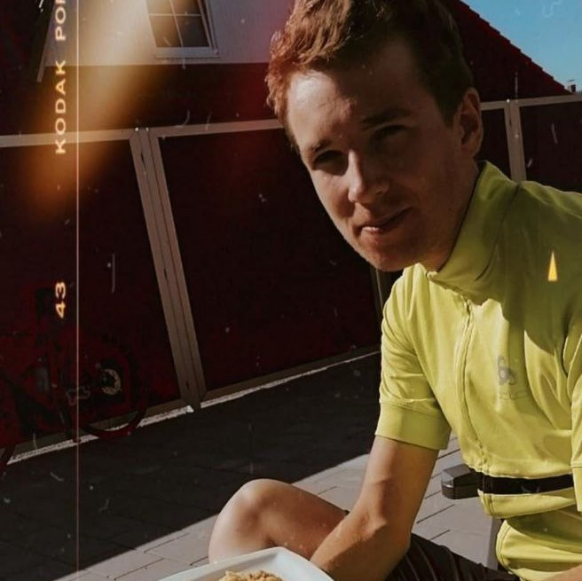

Tom Martensen
Software Engineering Student
Potsdam, Germany
Software Projects
Toolbox for Interpretability Comparison
FIBER: Flexible Data Marts for Clinical Predictive Modeling
Ward-E: Redesigning Medical Ward Rounds
Foodwaste - Measuring Your Carbon Foodprint
Bachelor Project - Event Processing-based IoT Dashboard
Voluntary Work
Lead Organizer at HackHPI 2019
Mentor at Europa macht Schule e.V.